testes-automatizados)O projeto usado é a API do challenge ESG em C# (.NET 8), a mesma das atividades anteriores, com o tema eficiência energética e sustentabilidade. Ela recebe as leituras de consumo de energia dos equipamentos de cada setor de uma empresa, gera um alerta quando um setor passa do limite mensal de kWh, permite ligar e desligar equipamentos remotamente (só para ADMIN) e entrega um relatório de consumo por setor. O banco é SQL Server e a autenticação é feita com JWT.
Como o enunciado permite, os testes foram escritos em Java com Cucumber, seguindo a mesma arquitetura
vista em aula (pastas features, steps, services, model,
runner e hook). O projeto de testes fica na pasta testes-automatizados e é
separado da API: ele faz requisições HTTP para a API rodando de verdade (local, em Docker ou no pipeline), do mesmo
jeito que um cliente faria.
| Item | Resultado |
|---|---|
| Funcionalidades (.feature) em Gherkin | 6 |
| Cenários BDD executados | 26 (12 positivos e 14 negativos) |
| Endpoints da API cobertos | 10 de 10 |
| Contratos JSON Schema | 9 |
| Resultado da execução | 26 cenários e 150 steps aprovados |
Cada funcionalidade recebeu uma tag com o pilar ESG que ela protege (@ambiental e
@governanca). Assim os testes, além de garantir a qualidade técnica, verificam que a API continua
cumprindo o seu papel dentro da proposta ESG.
| Pilar | O que os testes garantem |
|---|---|
| Ambiental (eficiência energética) | Leituras de consumo são registradas corretamente; o consumo acima do limite do setor gera alerta; o desligamento remoto funciona e equipamento desligado não registra consumo; o painel por setor mostra consumo e limites certos. |
| Governança (integridade, rastreabilidade e compliance) | Ações críticas exigem autenticação (401 sem token); credenciais e dados inválidos são rejeitados; a resolução de um alerta registra a data (rastreabilidade) e não pode ser repetida; os contratos JSON Schema garantem que o formato das respostas não muda sem aviso para quem integra com a API. |
| Social (usabilidade) | Os cenários negativos conferem que a API devolve mensagens de erro claras, que indicam ao usuário o que corrigir (ex.: "Email ou senha invalidos.", campo com erro de validação). |
| Ferramenta | Uso no projeto |
|---|---|
| Java 21 + Maven (Maven Wrapper) | Linguagem e build. O mvnw baixa o Maven sozinho, então não precisa instalar. |
| Cucumber 7 (cucumber-java + cucumber-junit) | Executa os cenários escritos em Gherkin (# language: pt). |
| Cucumber PicoContainer | Compartilha o estado do cenário (última resposta, token, IDs) entre as classes de steps. |
| Rest Assured | Faz as requisições HTTP e extrai as respostas. |
| Gson + Lombok | Modelos (DTOs) que viram o JSON das requisições. |
| json-schema-validator (networknt) + org.json | Testes de contrato com JSON Schema. |
| JUnit 4 | Asserções e execução pela classe TestRunner. |
| Docker / GitHub Actions | Execução dos testes em container e no pipeline de CI/CD. |
testes-automatizados/
├── pom.xml dependências + surefire executando o TestRunner
├── mvnw / mvnw.cmd Maven Wrapper
├── Dockerfile imagem que executa os testes
└── src/test/
├── java/
│ ├── runner/TestRunner.java configuração do Cucumber (features, glue, tags, relatórios)
│ ├── hook/Hook.java @BeforeAll espera a API; @After anexa evidências e religa equipamentos
│ ├── steps/ ComumSteps, AutenticacaoSteps, LeiturasSteps, AlertasSteps, ...
│ ├── services/ chamadas Rest Assured (um service por recurso) + ContratoService
│ ├── model/ LoginModel, LeituraModel, AlertaModel, ErroApiModel
│ └── support/ ConfiguracaoApi (URL da API) e ContextoTeste (estado do cenário)
└── resources/
├── features/ 6 arquivos .feature em português
└── schemas/ 9 contratos JSON Schema
Fluxo de um passo: o Cucumber lê a linha do .feature e chama o método da classe de
steps com a mesma frase. O step chama um service, que monta a requisição com Rest Assured e guarda a
resposta no ContextoTeste. Os passos de validação (Então) leem essa resposta e conferem o
status code, os campos do JSON e o contrato. Os passos que se repetem em todas as funcionalidades (status code,
corpo, mensagem de erro e contrato) ficam em ComumSteps, para não duplicar código.
Testes independentes: cada cenário faz o próprio login e prepara os dados de que precisa (por exemplo, "que o equipamento 4 esteja ligado" liga o equipamento se ele estiver desligado). Por isso a suíte pode ser executada várias vezes seguidas, em qualquer ordem e no mesmo banco. Isso foi conferido rodando a suíte completa mais de uma vez em sequência, sempre com 100% de aprovação.
Os cenários foram escritos em português, no formato Dado - Quando - Então, com tabelas de dados (data tables) para os campos das requisições. Cada cenário tem uma tag que indica se é caminho feliz (@positivo) ou falha (@negativo), e os que validam contrato têm a tag @contrato. A tag @regressivo, aplicada em todas as funcionalidades, é a usada pelo TestRunner.
Autenticacao.feature (4 cenários)Garante que só usuários com credenciais válidas recebem o token JWT e que dados inválidos são barrados com mensagens claras. É a base da governança: as ações críticas da API (registrar leitura, resolver alerta, desligar equipamento) dependem desse controle de acesso. O último cenário é um Esquema do Cenário (Scenario Outline), que roda uma vez para cada linha de Exemplos.
# language: pt @regressivo @governanca Funcionalidade: Autenticação de usuários na API de eficiência energética Como gestor de energia da empresa Quero me autenticar na API Para que somente pessoas autorizadas operem o monitoramento de consumo (governança e compliance) @smoke @positivo @contrato Cenário: Login bem-sucedido com credenciais válidas Dado que eu tenha os seguintes dados de login: | campo | valor | | email | admin@energia.com | | senha | admin@123 | Quando eu enviar a requisição para o endpoint "/api/auth/login" de autenticação Então o status code da resposta deve ser 200 E o corpo da resposta deve conter os valores: | campo | valor | | nome | Administrador | | papel | ADMIN | E a resposta deve conter um token JWT E que o arquivo de contrato esperado é o "Login bem-sucedido" E a resposta da requisição deve estar em conformidade com o contrato selecionado @negativo @contrato Cenário: Login sem sucesso ao informar a senha incorreta Dado que eu tenha os seguintes dados de login: | campo | valor | | email | admin@energia.com | | senha | senhaErrada1 | Quando eu enviar a requisição para o endpoint "/api/auth/login" de autenticação Então o status code da resposta deve ser 400 E o corpo de resposta de erro da api deve retornar a mensagem "Email ou senha invalidos." E que o arquivo de contrato esperado é o "Erro da API" E a resposta da requisição deve estar em conformidade com o contrato selecionado @negativo @contrato Esquema do Cenário: Login rejeitado por dados em formato inválido (<situacao>) Dado que eu tenha os seguintes dados de login: | campo | valor | | email | <email> | | senha | <senha> | Quando eu enviar a requisição para o endpoint "/api/auth/login" de autenticação Então o status code da resposta deve ser 400 E a resposta deve apontar erro de validação no campo "<campoComErro>" E que o arquivo de contrato esperado é o "Erro de validação" E a resposta da requisição deve estar em conformidade com o contrato selecionado Exemplos: | situacao | email | senha | campoComErro | | e-mail sem arroba | admin-energia.com | admin@123 | Email | | senha com menos de 6 dígitos | admin@energia.com | 123 | Senha |
Leituras.feature (6 cenários)Cobre o registro das leituras enviadas pelos sensores IoT e a consulta paginada. Além do caminho feliz, testa a regra ambiental principal do sistema: uma leitura que faz o setor passar do limite mensal de kWh precisa gerar um alerta de consumo. Os cenários negativos garantem a integridade dos dados (consumo negativo, equipamento inexistente e acesso sem token).
# language: pt @regressivo @ambiental Funcionalidade: Registro e consulta de leituras de consumo de energia Como sistema de monitoramento IoT da empresa Quero registrar e consultar as leituras de consumo dos equipamentos Para acompanhar o gasto de energia e identificar desperdícios @smoke @positivo @contrato Cenário: Consultar as leituras de consumo com paginação Quando eu consultar o endpoint "/api/leituras" com os filtros: | filtro | valor | | page | 1 | | pageSize | 5 | Então o status code da resposta deve ser 200 E o corpo da resposta deve conter os valores: | campo | valor | | page | 1 | | pageSize | 5 | E a lista "items" da resposta deve ter no máximo 5 registros E que o arquivo de contrato esperado é o "Leituras paginadas" E a resposta da requisição deve estar em conformidade com o contrato selecionado @positivo @contrato Cenário: Registrar a leitura de consumo de um equipamento ligado Dado que eu esteja autenticado como administrador E que o equipamento 2 esteja ligado E que eu tenha os seguintes dados da leitura: | campo | valor | | equipamentoId | 2 | | dataHora | 2026-10-15T10:00:00Z | | consumoKwh | 150.75 | Quando eu enviar a requisição para o endpoint "/api/leituras" de registro de leitura Então o status code da resposta deve ser 201 E o corpo da resposta deve conter os valores: | campo | valor | | equipamentoId | 2 | | equipamentoNome | Esteira 01 | | setorNome | Producao | | consumoKwh | 150.75 | E que o arquivo de contrato esperado é o "Leitura registrada" E a resposta da requisição deve estar em conformidade com o contrato selecionado @positivo Cenário: Leitura que ultrapassa o limite mensal do setor gera alerta de consumo Dado que eu esteja autenticado como administrador E que o equipamento 3 esteja ligado E que eu tenha os seguintes dados da leitura: | campo | valor | | equipamentoId | 3 | | dataHora | 2026-10-20T08:00:00Z | | consumoKwh | 9000 | Quando eu enviar a requisição para o endpoint "/api/leituras" de registro de leitura Então o status code da resposta deve ser 201 E deve existir um alerta de consumo em aberto para o setor "Escritorio" @negativo Cenário: Registrar leitura sem estar autenticado Dado que eu não esteja autenticado E que eu tenha os seguintes dados da leitura: | campo | valor | | equipamentoId | 2 | | dataHora | 2026-10-15T10:00:00Z | | consumoKwh | 10 | Quando eu enviar a requisição para o endpoint "/api/leituras" de registro de leitura Então o status code da resposta deve ser 401 E a resposta deve exigir autenticação do tipo "Bearer" @negativo @contrato Cenário: Registrar leitura com consumo negativo Dado que eu esteja autenticado como administrador E que eu tenha os seguintes dados da leitura: | campo | valor | | equipamentoId | 2 | | dataHora | 2026-10-15T10:00:00Z | | consumoKwh | -5 | Quando eu enviar a requisição para o endpoint "/api/leituras" de registro de leitura Então o status code da resposta deve ser 400 E a resposta deve apontar erro de validação no campo "ConsumoKwh" E que o arquivo de contrato esperado é o "Erro de validação" E a resposta da requisição deve estar em conformidade com o contrato selecionado @negativo @contrato Cenário: Registrar leitura para um equipamento inexistente Dado que eu esteja autenticado como administrador E que eu tenha os seguintes dados da leitura: | campo | valor | | equipamentoId | 9999 | | dataHora | 2026-10-15T10:00:00Z | | consumoKwh | 10 | Quando eu enviar a requisição para o endpoint "/api/leituras" de registro de leitura Então o status code da resposta deve ser 404 E o corpo de resposta de erro da api deve retornar a mensagem "Equipamento 9999 nao encontrado." E que o arquivo de contrato esperado é o "Erro da API" E a resposta da requisição deve estar em conformidade com o contrato selecionado
Alertas.feature (5 cenários)Valida a consulta dos alertas (só com autenticação) e a resolução de um alerta. Para governança, o teste confere que a data de resolução fica registrada (rastreabilidade) e que um alerta já resolvido não pode ser resolvido de novo. A pré-condição "que exista um alerta de consumo em aberto" usa um alerta aberto ou, se não houver, registra uma leitura acima do limite para a própria API gerar o alerta.
# language: pt @regressivo @ambiental @governanca Funcionalidade: Gestão dos alertas de consumo excessivo de energia Como gestor de energia da empresa Quero consultar e resolver os alertas de consumo acima do limite Para agir contra o desperdício e manter o registro (rastreabilidade) de cada tratativa @negativo Cenário: Consultar alertas sem estar autenticado Dado que eu não esteja autenticado Quando eu consultar o endpoint "/api/alertas" com os filtros: | filtro | valor | | page | 1 | Então o status code da resposta deve ser 401 E a resposta deve exigir autenticação do tipo "Bearer" @smoke @positivo @contrato Cenário: Consultar os alertas de consumo estando autenticado Dado que eu esteja autenticado como administrador Quando eu consultar o endpoint "/api/alertas" com os filtros: | filtro | valor | | page | 1 | | pageSize | 10 | Então o status code da resposta deve ser 200 E o corpo da resposta deve conter os valores: | campo | valor | | page | 1 | | pageSize | 10 | E a lista "items" da resposta deve ter no máximo 10 registros E que o arquivo de contrato esperado é o "Alertas paginados" E a resposta da requisição deve estar em conformidade com o contrato selecionado @positivo @contrato Cenário: Resolver um alerta de consumo em aberto Dado que eu esteja autenticado como administrador E que exista um alerta de consumo em aberto Quando eu enviar a requisição para o endpoint "/api/alertas/{id}/resolver" de resolução do alerta Então o status code da resposta deve ser 200 E o corpo da resposta deve conter os valores: | campo | valor | | resolvido | true | E a data de resolução do alerta deve estar registrada E que o arquivo de contrato esperado é o "Alerta" E a resposta da requisição deve estar em conformidade com o contrato selecionado @negativo @contrato Cenário: Não permitir resolver novamente um alerta já resolvido Dado que eu esteja autenticado como administrador E que exista um alerta de consumo já resolvido Quando eu enviar a requisição para o endpoint "/api/alertas/{id}/resolver" de resolução do alerta Então o status code da resposta deve ser 400 E o corpo de resposta de erro da api deve retornar a mensagem "Alerta ja esta resolvido." E que o arquivo de contrato esperado é o "Erro da API" E a resposta da requisição deve estar em conformidade com o contrato selecionado @negativo Cenário: Resolver um alerta inexistente Dado que eu esteja autenticado como administrador E que o alerta informado seja o de ID 999999 Quando eu enviar a requisição para o endpoint "/api/alertas/{id}/resolver" de resolução do alerta Então o status code da resposta deve ser 404 E o corpo de resposta de erro da api deve retornar a mensagem "Alerta 999999 nao encontrado."
Equipamentos.feature (7 cenários)Testa a consulta de equipamentos e o desligamento/religamento remoto, que é a ação usada para evitar desperdício de energia. Como desligar é uma ação crítica, há cenários garantindo que ela exige token e que estados inválidos são recusados. A tag @religar-equipamento aciona um Hook que religa o equipamento ao final, deixando o ambiente pronto para os próximos cenários.
# language: pt @regressivo @ambiental @governanca Funcionalidade: Consulta e controle remoto de equipamentos monitorados Como gestor de energia da empresa Quero consultar os equipamentos e ligá-los ou desligá-los remotamente Para evitar desperdício de energia, permitindo essa ação crítica somente a administradores @smoke @positivo @contrato Cenário: Consultar os detalhes de um equipamento existente Quando eu consultar o equipamento 1 no endpoint "/api/equipamentos" Então o status code da resposta deve ser 200 E o corpo da resposta deve conter os valores: | campo | valor | | id | 1 | | nome | Compressor 01 | | numeroSerie | CMP-001 | | setorNome | Producao | | potenciaNominalWatts | 15000 | E que o arquivo de contrato esperado é o "Equipamento" E a resposta da requisição deve estar em conformidade com o contrato selecionado @negativo @contrato Cenário: Consultar um equipamento inexistente Quando eu consultar o equipamento 9999 no endpoint "/api/equipamentos" Então o status code da resposta deve ser 404 E o corpo de resposta de erro da api deve retornar a mensagem "Equipamento 9999 nao encontrado." E que o arquivo de contrato esperado é o "Erro da API" E a resposta da requisição deve estar em conformidade com o contrato selecionado @positivo @contrato @religar-equipamento Cenário: Desligar remotamente um equipamento ligado Dado que eu esteja autenticado como administrador E que o equipamento 4 esteja ligado Quando eu enviar a requisição para o endpoint "/api/equipamentos/{id}/desligar" do equipamento 4 Então o status code da resposta deve ser 200 E o corpo da resposta deve conter os valores: | campo | valor | | id | 4 | | ativo | false | E que o arquivo de contrato esperado é o "Equipamento" E a resposta da requisição deve estar em conformidade com o contrato selecionado @positivo @contrato @religar-equipamento Cenário: Ligar remotamente um equipamento desligado Dado que eu esteja autenticado como administrador E que o equipamento 4 esteja desligado Quando eu enviar a requisição para o endpoint "/api/equipamentos/{id}/ligar" do equipamento 4 Então o status code da resposta deve ser 200 E o corpo da resposta deve conter os valores: | campo | valor | | id | 4 | | ativo | true | E que o arquivo de contrato esperado é o "Equipamento" E a resposta da requisição deve estar em conformidade com o contrato selecionado @negativo Cenário: Não permitir ligar um equipamento que já está ligado Dado que eu esteja autenticado como administrador E que o equipamento 4 esteja ligado Quando eu enviar a requisição para o endpoint "/api/equipamentos/{id}/ligar" do equipamento 4 Então o status code da resposta deve ser 400 E o corpo de resposta de erro da api deve retornar a mensagem "Equipamento ja esta ligado." @negativo Cenário: Não permitir desligar um equipamento sem estar autenticado Dado que eu não esteja autenticado Quando eu enviar a requisição para o endpoint "/api/equipamentos/{id}/desligar" do equipamento 4 Então o status code da resposta deve ser 401 E a resposta deve exigir autenticação do tipo "Bearer" @negativo @religar-equipamento Cenário: Equipamento desligado não aceita novas leituras de consumo Dado que eu esteja autenticado como administrador E que o equipamento 4 esteja desligado E que eu tenha os seguintes dados da leitura: | campo | valor | | equipamentoId | 4 | | dataHora | 2026-10-15T10:00:00Z | | consumoKwh | 25 | Quando eu enviar a requisição para o endpoint "/api/leituras" de registro de leitura Então o status code da resposta deve ser 400 E o corpo de resposta de erro da api deve retornar a mensagem "Equipamento esta desligado e nao pode registrar leituras."
Dashboard.feature (3 cenários)Valida o relatório de consumo agregado por setor, usado para transparência dos indicadores ambientais: setores e limites corretos, período sem leituras com consumo zero e rejeição de data em formato inválido.
# language: pt @regressivo @ambiental @governanca Funcionalidade: Painel de consumo de energia por setor Como diretoria de sustentabilidade (ESG) Quero visualizar o consumo de energia agregado por setor Para comparar com as metas de consumo e dar transparência aos indicadores ambientais @smoke @positivo @contrato Cenário: Consultar o consumo de energia por setor Quando eu consultar o endpoint "/api/dashboard/consumo-por-setor" com os filtros: | filtro | valor | | dataInicio | 2026-10-01 | | dataFim | 2026-10-31 | Então o status code da resposta deve ser 200 E a resposta deve conter os setores: | setor | limiteMensalKwh | | Producao | 50000 | | Escritorio | 8000 | | Armazem | 15000 | E que o arquivo de contrato esperado é o "Consumo por setor" E a resposta da requisição deve estar em conformidade com o contrato selecionado @positivo Cenário: Consultar o consumo de um período sem leituras registradas Quando eu consultar o endpoint "/api/dashboard/consumo-por-setor" com os filtros: | filtro | valor | | dataInicio | 2000-01-01 | | dataFim | 2000-01-31 | Então o status code da resposta deve ser 200 E todos os setores devem apresentar consumo total igual a 0 @negativo @contrato Cenário: Consultar o consumo informando uma data em formato inválido Quando eu consultar o endpoint "/api/dashboard/consumo-por-setor" com os filtros: | filtro | valor | | dataInicio | 31-13-2026 | Então o status code da resposta deve ser 400 E a resposta deve apontar erro de validação no campo "DataInicio" E que o arquivo de contrato esperado é o "Erro de validação" E a resposta da requisição deve estar em conformidade com o contrato selecionado
SaudeApi.feature (1 cenário)Cenário de smoke test que confirma que a API está no ar antes dos demais testes.
# language: pt @regressivo @smoke Funcionalidade: Verificação de saúde (health check) da API Como equipe de operações Quero verificar se a API está no ar Para garantir a disponibilidade do monitoramento de energia antes de cada entrega Cenário: API de eficiência energética disponível Quando eu consultar o endpoint "/health" de verificação de saúde Então o status code da resposta deve ser 200 E o corpo da resposta deve ser o texto "Healthy"
Todos os endpoints da API têm pelo menos um cenário automatizado. Em cada um são feitas três validações: status code (passo "o status code da resposta deve ser ..."), corpo da resposta em JSON (passos que comparam os campos retornados, as mensagens de erro e as listas) e contrato com JSON Schema.
| Método | Endpoint | Status testados | Corpo (JSON) validado | Contrato |
|---|---|---|---|---|
POST | /api/auth/login | 200, 400 (regra), 400 (validação) | nome, papel, token JWT; mensagem de erro; campo com erro | Login bem-sucedido, Erro da API, Erro de validação |
GET | /api/leituras | 200 | page, pageSize, tamanho da lista | Leituras paginadas |
POST | /api/leituras | 201, 400, 401, 404 | equipamento, setor, consumo; erros; alerta gerado | Leitura registrada, Erro de validação, Erro da API |
GET | /api/alertas | 200, 401 | page, pageSize, tamanho da lista; cabeçalho WWW-Authenticate | Alertas paginados |
PATCH | /api/alertas/{id}/resolver | 200, 400, 404 | resolvido = true, data de resolução; mensagens de erro | Alerta, Erro da API |
GET | /api/equipamentos/{id} | 200, 404 | id, nome, número de série, setor, potência; mensagem de erro | Equipamento, Erro da API |
POST | /api/equipamentos/{id}/desligar | 200, 401 | ativo = false | Equipamento |
POST | /api/equipamentos/{id}/ligar | 200, 400 | ativo = true; mensagem de erro | Equipamento |
GET | /api/dashboard/consumo-por-setor | 200, 400 | setores e limites; consumo zero; campo com erro | Consumo por setor, Erro de validação |
GET | /health | 200 | texto "Healthy" | (resposta em texto, sem JSON) |
Os passos genéricos de validação ficam na classe ComumSteps. O passo "o corpo da resposta deve conter os valores" lê cada campo da tabela com o JsonPath do Rest Assured; números são comparados pelo valor (15000 é igual a 15000.00) e o restante como texto. Abaixo, um exemplo da ligação entre a feature, os steps e o service:
package steps;
import io.cucumber.java.pt.Dado;
import io.cucumber.java.pt.E;
import io.cucumber.java.pt.Quando;
import org.junit.Assert;
import services.AlertasService;
import services.LeiturasService;
import java.util.List;
import java.util.Map;
public class LeiturasSteps {
private final LeiturasService leiturasService;
private final AlertasService alertasService;
public LeiturasSteps(LeiturasService leiturasService, AlertasService alertasService) {
this.leiturasService = leiturasService;
this.alertasService = alertasService;
}
@Dado("que eu tenha os seguintes dados da leitura:")
public void queEuTenhaOsSeguintesDadosDaLeitura(List<Map<String, String>> rows) {
for (Map<String, String> columns : rows) {
leiturasService.setFieldsLeitura(columns.get("campo"), columns.get("valor"));
}
}
@Quando("eu enviar a requisição para o endpoint {string} de registro de leitura")
public void euEnviarARequisicaoParaOEndpointDeRegistroDeLeitura(String endPoint) {
leiturasService.registrarLeitura(endPoint);
}
@E("deve existir um alerta de consumo em aberto para o setor {string}")
public void deveExistirUmAlertaDeConsumoEmAbertoParaOSetor(String setor) {
Assert.assertTrue("Nenhum alerta em aberto encontrado para o setor " + setor,
alertasService.existeAlertaAbertoParaSetor(setor));
}
}package services;
import io.restassured.response.Response;
import model.LeituraModel;
import support.ContextoTeste;
import java.math.BigDecimal;
public class LeiturasService extends BaseService {
final LeituraModel leituraModel = new LeituraModel();
public LeiturasService(ContextoTeste contexto) {
super(contexto);
}
public void setFieldsLeitura(String field, String value) {
switch (field) {
case "equipamentoId" -> leituraModel.setEquipamentoId(Integer.parseInt(value));
case "dataHora" -> leituraModel.setDataHora(value);
case "consumoKwh" -> leituraModel.setConsumoKwh(new BigDecimal(value));
default -> throw new IllegalStateException("Campo inesperado: " + field);
}
}
public void registrarLeitura(String endPoint) {
String url = url(endPoint);
String bodyToSend = gson.toJson(leituraModel);
Response response = requisicao()
.body(bodyToSend)
.when()
.post(url)
.then()
.extract()
.response();
registrarResposta("POST", url, response);
}
}O teste de contrato garante que a estrutura da resposta (campos obrigatórios, tipos e formatos) continua a mesma, protegendo quem consome a API. Os contratos ficam em src/test/resources/schemas e usam o draft-07 do JSON Schema. Em relação ao exemplo da aula, os contratos foram deixados mais rígidos: além de required e type, usam additionalProperties: false (um campo novo ou renomeado quebra o contrato), valores mínimos e um pattern para datas e para o token JWT.
| Arquivo | Nome usado no cenário | Resposta validada |
|---|---|---|
login-bem-sucedido.json | Login bem-sucedido | 200 de POST /api/auth/login |
leitura-registrada.json | Leitura registrada | 201 de POST /api/leituras |
leituras-paginadas.json | Leituras paginadas | 200 de GET /api/leituras |
alerta.json | Alerta | 200 de PATCH /api/alertas/{id}/resolver |
alertas-paginados.json | Alertas paginados | 200 de GET /api/alertas |
equipamento.json | Equipamento | 200 de GET /api/equipamentos/{id} e de ligar/desligar |
consumo-por-setor.json | Consumo por setor | 200 de GET /api/dashboard/consumo-por-setor (lista) |
erro-api.json | Erro da API | 400 de regra de negócio e 404 (problem+json do middleware) |
erro-validacao.json | Erro de validação | 400 de validação de entrada (ValidationProblemDetails) |
{
"$schema": "http://json-schema.org/draft-07/schema#",
"title": "Equipamento",
"description": "Contrato da resposta 200 de GET /api/equipamentos/{id} e de POST /api/equipamentos/{id}/ligar e /desligar",
"type": "object",
"required": ["id", "nome", "numeroSerie", "setorId", "setorNome", "ativo", "potenciaNominalWatts"],
"properties": {
"id": { "type": "integer", "minimum": 1 },
"nome": { "type": "string", "minLength": 1 },
"numeroSerie": { "type": "string", "minLength": 1 },
"setorId": { "type": "integer", "minimum": 1 },
"setorNome": { "type": "string" },
"ativo": { "type": "boolean" },
"potenciaNominalWatts": { "type": "number", "minimum": 0 }
},
"additionalProperties": false
}Nos cenários, o contrato é escolhido pelo nome ("que o arquivo de contrato esperado é o ...") e a validação é feita pela classe ContratoService. Se a resposta não seguir o contrato, o teste falha listando cada diferença encontrada (veja as Figuras 11 e 12 na seção 9).
package services;
import com.fasterxml.jackson.databind.JsonNode;
import com.fasterxml.jackson.databind.ObjectMapper;
import com.networknt.schema.JsonSchema;
import com.networknt.schema.JsonSchemaFactory;
import com.networknt.schema.SpecVersion;
import com.networknt.schema.ValidationMessage;
import org.json.JSONObject;
import org.json.JSONTokener;
import support.ContextoTeste;
import java.io.IOException;
import java.io.InputStream;
import java.util.Set;
/**
* Testes de contrato: valida a resposta da API contra um JSON Schema (pasta src/test/resources/schemas).
*/
public class ContratoService {
private static final String SCHEMAS_PATH = "/schemas/";
private final ContextoTeste contexto;
private final ObjectMapper mapper = new ObjectMapper();
private JSONObject jsonSchema;
public ContratoService(ContextoTeste contexto) {
this.contexto = contexto;
}
public void setContract(String contract) throws IOException {
String arquivo = switch (contract) {
case "Login bem-sucedido" -> "login-bem-sucedido.json";
case "Leitura registrada" -> "leitura-registrada.json";
case "Leituras paginadas" -> "leituras-paginadas.json";
case "Alerta" -> "alerta.json";
case "Alertas paginados" -> "alertas-paginados.json";
case "Equipamento" -> "equipamento.json";
case "Consumo por setor" -> "consumo-por-setor.json";
case "Erro da API" -> "erro-api.json";
case "Erro de validação" -> "erro-validacao.json";
default -> throw new IllegalStateException("Contrato inesperado: " + contract);
};
jsonSchema = loadJsonFromFile(SCHEMAS_PATH + arquivo);
}
public Set<ValidationMessage> validateResponseAgainstSchema() throws IOException {
JsonSchemaFactory schemaFactory = JsonSchemaFactory.getInstance(SpecVersion.VersionFlag.V7);
JsonSchema schema = schemaFactory.getSchema(jsonSchema.toString());
// readTree aceita tanto objeto quanto lista (o dashboard responde uma lista)
JsonNode jsonResponseNode = mapper.readTree(contexto.getResponse().getBody().asString());
return schema.validate(jsonResponseNode);
}
// Le o arquivo do classpath, funcionando igual na IDE, no Maven e no Docker
private JSONObject loadJsonFromFile(String filePath) throws IOException {
try (InputStream inputStream = getClass().getResourceAsStream(filePath)) {
if (inputStream == null) {
throw new IOException("Arquivo de contrato nao encontrado: " + filePath);
}
return new JSONObject(new JSONTokener(inputStream));
}
}
}As dependências são as da aula (Cucumber, Rest Assured, Gson, Lombok, JSON Schema Validator e org.json), mais o cucumber-picocontainer. O maven-surefire-plugin executa apenas o TestRunner, então o comando mvn clean test roda todos os cenários.
<dependencies>
<!-- Cucumber Java: escrita dos cenarios em Gherkin -->
<dependency>
<groupId>io.cucumber</groupId>
<artifactId>cucumber-java</artifactId>
<version>${cucumber.version}</version>
<scope>test</scope>
</dependency>
<!-- Cucumber JUnit: executa os cenarios pelo JUnit (classe TestRunner) -->
<dependency>
<groupId>io.cucumber</groupId>
<artifactId>cucumber-junit</artifactId>
<version>${cucumber.version}</version>
<scope>test</scope>
</dependency>
<!-- Cucumber PicoContainer: compartilha o estado do cenario entre as classes de steps -->
<dependency>
<groupId>io.cucumber</groupId>
<artifactId>cucumber-picocontainer</artifactId>
<version>${cucumber.version}</version>
<scope>test</scope>
</dependency>
<!-- Lombok: gera getters/setters dos modelos -->
<dependency>
<groupId>org.projectlombok</groupId>
<artifactId>lombok</artifactId>
<version>${lombok.version}</version>
<scope>provided</scope>
</dependency>
<!-- Rest Assured: requisicoes HTTP para a API -->
<dependency>
<groupId>io.rest-assured</groupId>
<artifactId>rest-assured</artifactId>
<version>5.5.0</version>
<scope>test</scope>
</dependency>
<!-- Google Gson: converte os modelos Java em JSON -->
<dependency>
<groupId>com.google.code.gson</groupId>
<artifactId>gson</artifactId>
<version>2.11.0</version>
</dependency>
<!-- Json Schema Validator: testes de contrato -->
<dependency>
<groupId>com.networknt</groupId>
<artifactId>json-schema-validator</artifactId>
<version>1.5.1</version>
</dependency>
<!-- Json: leitura dos arquivos de contrato -->
<dependency>
<groupId>org.json</groupId>
<artifactId>json</artifactId>
<version>20240303</version>
</dependency>
<!-- Desliga os logs internos do validador de JSON Schema (evita aviso do SLF4J no console) -->
<dependency>
<groupId>org.slf4j</groupId>
<artifactId>slf4j-nop</artifactId>
<version>2.0.13</version>
<scope>test</scope>
</dependency>
</dependencies>
<build>
<plugins>
<plugin>
<groupId>org.apache.maven.plugins</groupId>
<artifactId>maven-compiler-plugin</artifactId>
<version>3.13.0</version>
<configuration>
<!-- Necessario a partir do JDK 23 para o Lombok ser processado -->
<annotationProcessorPaths>
<path>
<groupId>org.projectlombok</groupId>
<artifactId>lombok</artifactId>
<version>${lombok.version}</version>
</path>
</annotationProcessorPaths>
</configuration>
</plugin>
<plugin>
<groupId>org.apache.maven.plugins</groupId>
<artifactId>maven-surefire-plugin</artifactId>
<version>3.5.2</version>
<configuration>
<!-- O Maven executa apenas o TestRunner (que chama o Cucumber) -->
<includes>
<include>**/TestRunner.java</include>
</includes>
<argLine>-Dfile.encoding=UTF-8 -Dstdout.encoding=UTF-8</argLine>
</configuration>
</plugin>
</plugins>
</build>package runner;
import io.cucumber.junit.Cucumber;
import io.cucumber.junit.CucumberOptions;
import org.junit.runner.RunWith;
@RunWith(Cucumber.class)
@CucumberOptions(
features = "src/test/resources/features",
glue = {"steps", "hook"},
tags = "@regressivo",
plugin = {
"pretty",
"summary",
"html:target/cucumber-reports.html",
"json:target/cucumber.json",
"junit:target/cucumber-junit.xml"
},
monochrome = true
)
public class TestRunner {
}O TestRunner executa as features com a tag @regressivo e gera três relatórios em target/: HTML, JSON e JUnit XML. A classe Hook usa os quatro tipos de hook: @BeforeAll espera o /health da API responder (até 3 minutos, útil no Docker, onde a API espera o banco subir); @Before registra o início do cenário; @After anexa a requisição e a resposta da API no relatório HTML (evidência); e um @After com a tag @religar-equipamento religa os equipamentos desligados durante o cenário.
@BeforeAll
public static void aguardarApiDisponivel() throws InterruptedException {
String healthUrl = ConfiguracaoApi.getBaseUrl() + "/health";
System.out.println("Ambiente testado: " + ConfiguracaoApi.getBaseUrl());
System.out.println("Aguardando a API responder em " + healthUrl + " ...");
long limite = System.currentTimeMillis() + ESPERA_MAXIMA_SEGUNDOS * 1000L;
while (System.currentTimeMillis() < limite) {
try {
if (RestAssured.get(healthUrl).statusCode() == 200) {
System.out.println("API disponivel. Iniciando os cenarios.");
return;
}
} catch (Exception e) {
// API ainda subindo: tenta novamente
}
Thread.sleep(3000);
}
throw new IllegalStateException("A API nao respondeu em " + healthUrl + " apos " + ESPERA_MAXIMA_SEGUNDOS
+ " segundos. Verifique se ela esta rodando (veja o README).");
}
(...)
/**
* Cenarios com a tag @religar-equipamento desligam um equipamento.
* Ao final, o equipamento e religado para nao afetar os demais cenarios (testes independentes).
*/
@After(value = "@religar-equipamento", order = 10)
public void religarEquipamentos() {
if (contexto.getEquipamentosParaReligar().isEmpty()) {
return;
}
if (contexto.getToken() == null) {
autenticacaoService.autenticarComoAdministrador();
}
for (Integer id : new ArrayList<>(contexto.getEquipamentosParaReligar())) {
equipamentosService.garantirEstado(id, true);
System.out.println("Equipamento " + id + " religado apos o cenario.");
}
}A URL da API não fica fixa no código: a classe ConfiguracaoApi lê a propriedade -Dapi.baseUrl do Maven, depois a variável de ambiente API_BASE_URL e, se nenhuma existir, usa http://localhost:8080 (API no Docker). Assim o mesmo projeto roda contra a API local, em container ou no pipeline.
O Dockerfile dos testes usa a imagem oficial do Maven com Java 21. O arquivo docker-compose.testes.yml adiciona o serviço testes à orquestração que já existia (API + SQL Server), acessando a API pelo nome do serviço na rede do compose.
# Imagem que executa os testes automatizados (BDD) contra a API. # O endereco da API vem da variavel API_BASE_URL (padrao: servico "api" do docker-compose). FROM maven:3.9.9-eclipse-temurin-21 WORKDIR /testes # Baixa as dependencias primeiro: essa camada fica em cache enquanto o pom.xml nao mudar COPY pom.xml . RUN mvn -B -q dependency:go-offline COPY src ./src ENV API_BASE_URL=http://api:8080 # Sem "clean": a pasta target pode estar montada como volume para guardar o relatorio no host CMD ["mvn", "-B", "test"]
# Executa os testes automatizados (BDD - Cucumber + Rest Assured) contra a API, tudo em containers.
# Usado JUNTO com o docker-compose.yml (que sobe a API e o SQL Server).
#
# Na raiz do projeto, com o arquivo .env criado (copie o .env.example):
# docker compose -f docker-compose.yml -f docker-compose.testes.yml up --build --exit-code-from testes
#
# Ao final o relatorio fica em testes-automatizados/target/cucumber-reports.html
# Para derrubar tudo depois: docker compose -f docker-compose.yml -f docker-compose.testes.yml down -v
services:
testes:
build:
context: ./testes-automatizados
dockerfile: Dockerfile
depends_on:
- api
environment:
# Dentro da rede do compose a API e acessada pelo nome do servico
API_BASE_URL: http://api:8080
volumes:
- ./testes-automatizados/target:/testes/target
networks:
- backendFoi adicionado o job Testes BDD (API) ao pipeline .github/workflows/ci-cd.yml da atividade de DevOps. Ele roda depois do build e dos testes unitários: sobe a API com SQL Server via docker compose, executa ./mvnw clean test, executa de novo pelo container de testes (validando o Dockerfile), publica um resumo dos cenários na aba Summary e o relatório HTML como artefato. O job de imagem Docker agora depende dele (needs: [build-test, testes-bdd]), então se algum cenário falhar a imagem não é publicada e nada é implantado em staging ou produção.
testes-bdd:
name: Testes BDD (API)
needs: build-test
runs-on: ubuntu-24.04
timeout-minutes: 25
steps:
- name: Checkout
uses: actions/checkout@v7
- name: Instalar Java 21
uses: actions/setup-java@v6
with:
distribution: temurin
java-version: "21"
cache: maven
- name: Gerar segredos do ambiente de teste
run: |
SA="Aa1$(openssl rand -hex 12)"
JWT="$(openssl rand -hex 32)"
echo "::add-mask::${SA}"
echo "::add-mask::${JWT}"
echo "SA_PASSWORD=${SA}" >> "$GITHUB_ENV"
echo "JWT_SECRET_KEY=${JWT}" >> "$GITHUB_ENV"
- name: Subir API + SQL Server
run: docker compose -p esg-testes -f docker-compose.yml up -d --build
- name: Executar testes BDD (mvn clean test)
working-directory: testes-automatizados
run: ./mvnw -B clean test -Dapi.baseUrl=http://localhost:8080
- name: Executar testes BDD no container de testes (Dockerfile)
run: >
docker compose -p esg-testes -f docker-compose.yml -f docker-compose.testes.yml
run --rm --build testes
- name: Resumo dos testes
if: always()
run: python3 scripts/resumo-testes-bdd.py testes-automatizados/target/cucumber.json >> "$GITHUB_STEP_SUMMARY"
- name: Publicar relatorio dos testes BDD
if: always()
uses: actions/upload-artifact@v7
with:
name: relatorio-testes-bdd
path: |
testes-automatizados/target/cucumber-reports.html
testes-automatizados/target/cucumber.json
testes-automatizados/target/cucumber-junit.xml
if-no-files-found: warn
- name: Logs da API
if: failure()
run: docker compose -p esg-testes -f docker-compose.yml logs api | tail -n 100 || true
- name: Encerrar ambiente de teste
if: always()
run: docker compose -p esg-testes -f docker-compose.yml -f docker-compose.testes.yml down -v || true| Forma | Comandos |
|---|---|
| Tudo em Docker (API + banco + testes) | Na raiz, com o .env criado (copy .env.example .env):docker compose -f docker-compose.yml -f docker-compose.testes.yml up --build --exit-code-from testes |
| API no Docker, testes na máquina | docker compose up -d --buildcd testes-automatizadosmvnw.cmd clean test (Windows) ou ./mvnw clean test |
| Sem Docker (Windows) | executar-api.bat (API em http://localhost:5000) e depois executar-testes-bdd.bat, que roda os testes e abre o relatório HTML |
| IntelliJ | Abrir a pasta testes-automatizados (plugins Cucumber for Java e Lombok) e executar a classe runner/TestRunner |
| Somente algumas tags | mvnw.cmd clean test -Dcucumber.filter.tags="@smoke"mvnw.cmd clean test -Dcucumber.filter.tags="@contrato and @negativo" |
| Pipeline | Automático a cada push na branch main (ou Run workflow na aba Actions) |
Pré-requisito para rodar fora do Docker: JDK 21 ou superior. Ao final da execução os relatórios ficam em
testes-automatizados/target/ (cucumber-reports.html, cucumber.json e
cucumber-junit.xml). As instruções completas estão no README.md da pasta
testes-automatizados.
A suíte foi executada localmente no Windows 11 (JDK 24, compilando para Java 21) contra a API rodando com dotnet run e o SQL Server local, com o comando ./mvnw -B clean test -Dapi.baseUrl=http://localhost:5000. As Figuras 1 e 2 mostram trechos da saída real do console (as linhas omitidas estão marcadas com "(...)").
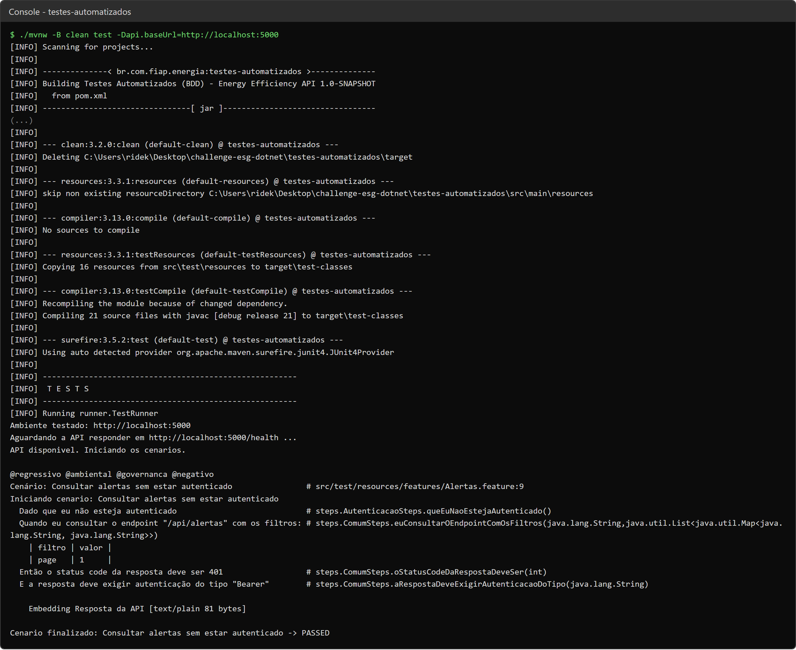
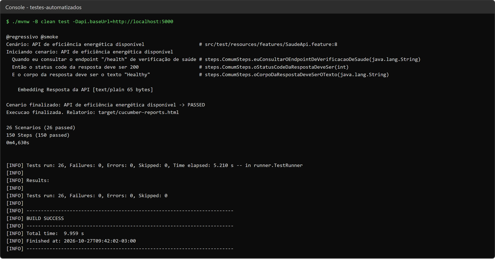
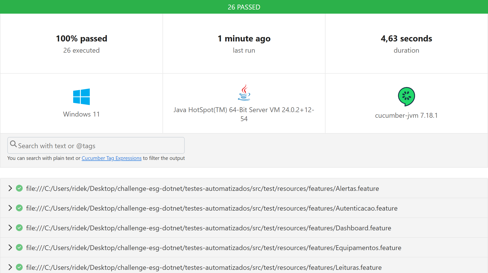
No relatório HTML, cada cenário traz os passos executados e, no final, a requisição e a resposta da API anexadas pelo Hook. As figuras a seguir mostram cenários positivos e negativos de cada recurso.
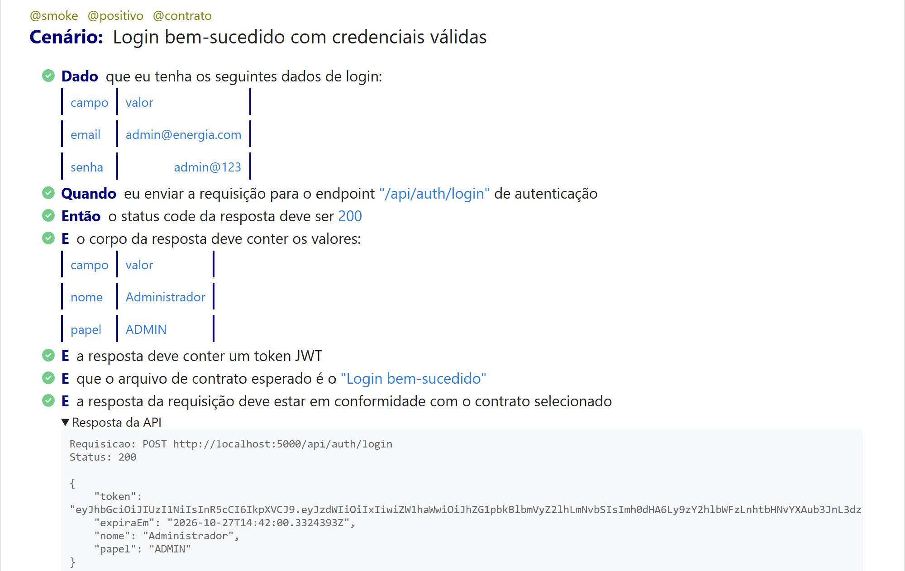
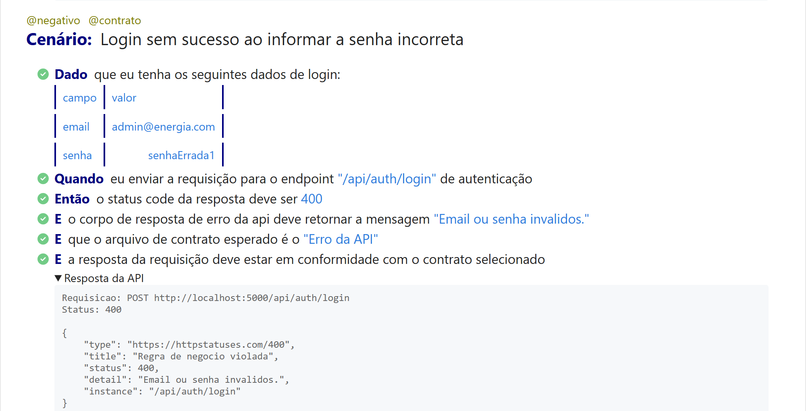
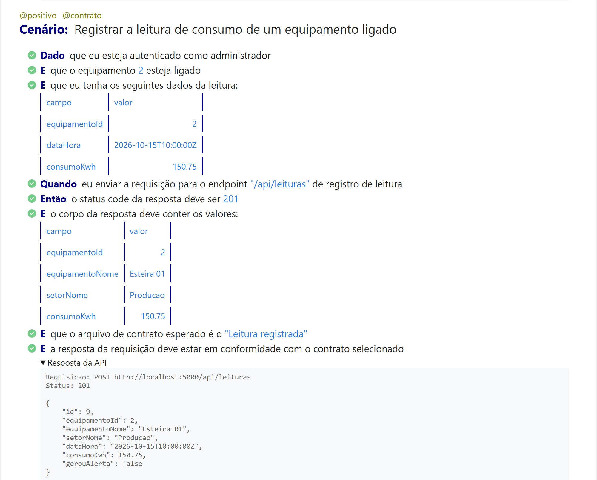
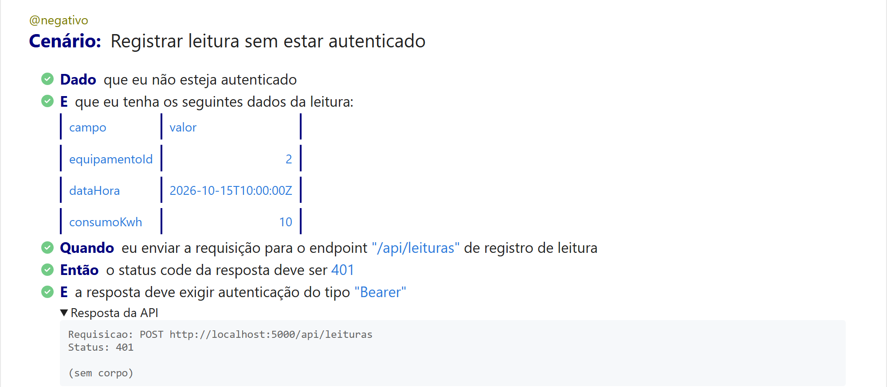
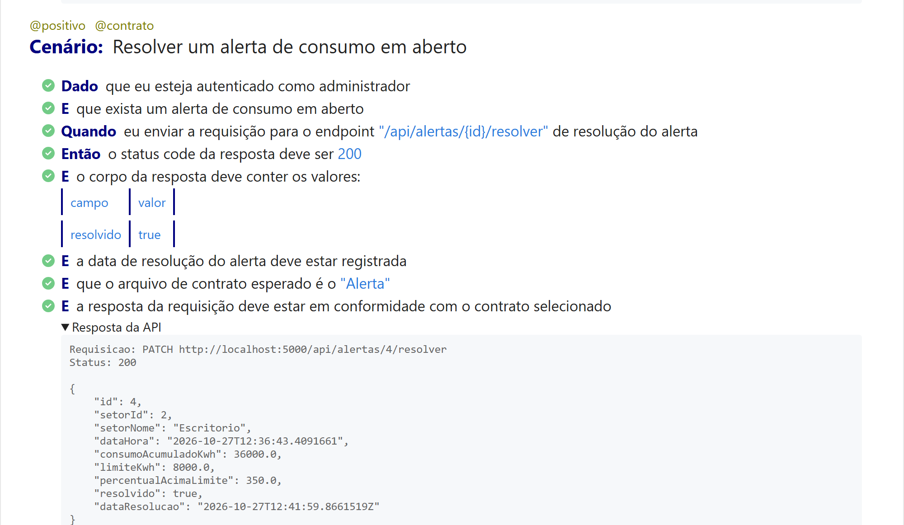
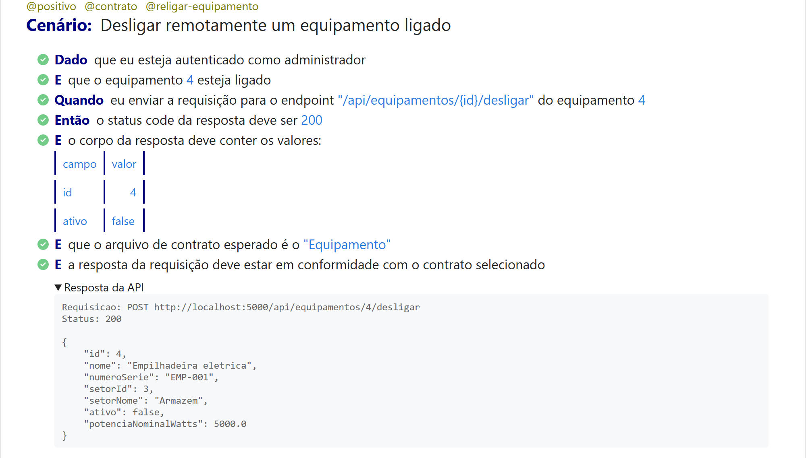
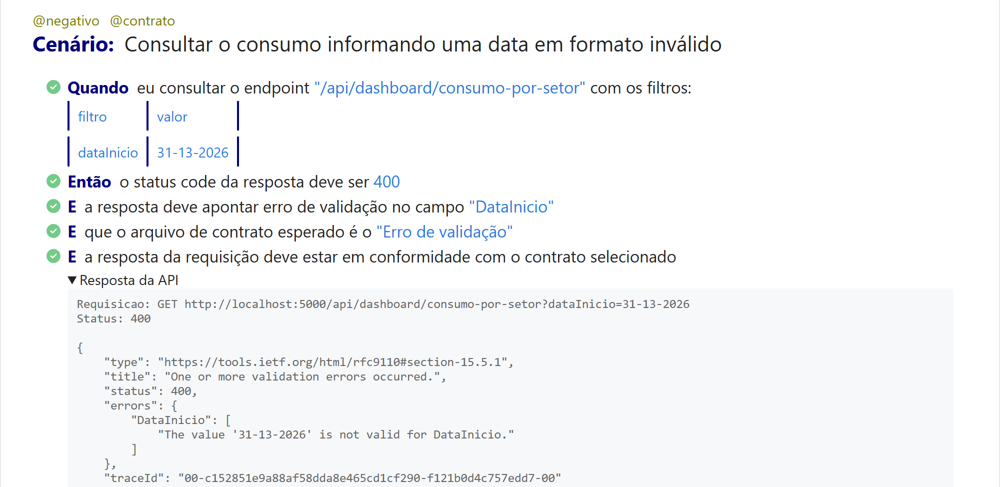
Para conferir que o teste de contrato realmente falha quando a resposta muda, o contrato equipamento.json foi alterado de propósito para esperar o campo ativo como texto ("type": "string"), enquanto a API devolve um booleano. O cenário falhou apontando exatamente a diferença ($.ativo: boolean encontrado, string esperado) e o Maven terminou com BUILD FAILURE. Depois o contrato foi restaurado e a suíte completa voltou a passar.
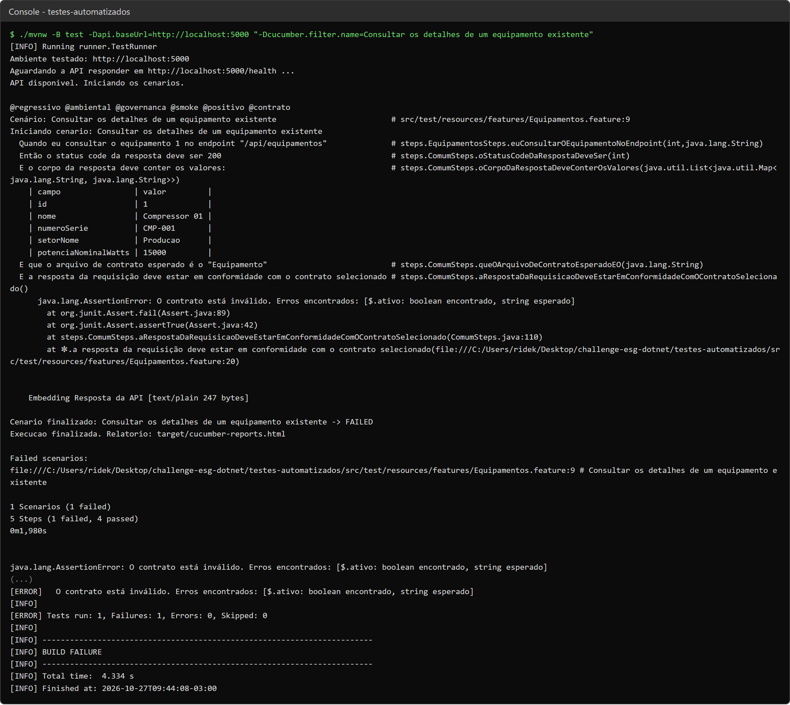
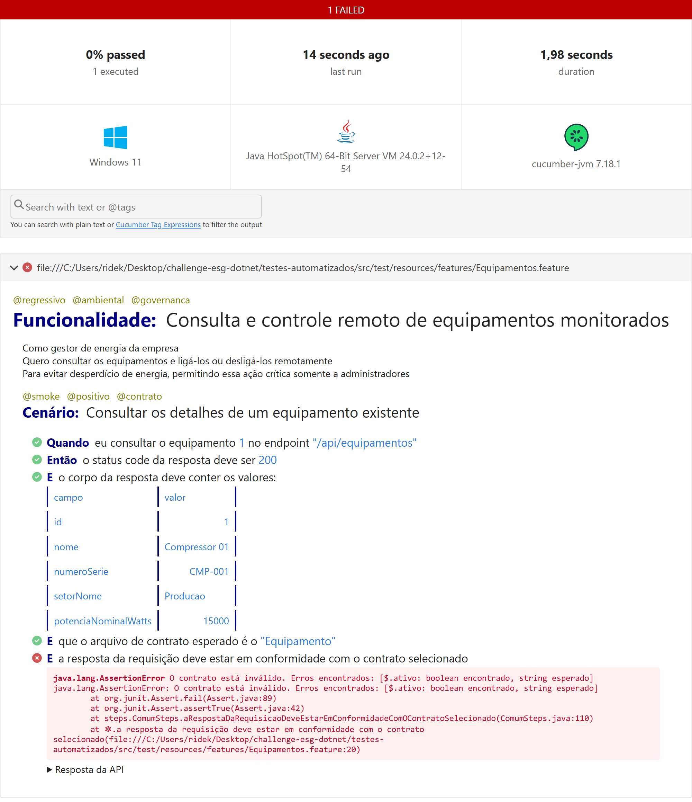
Com o BDD, o comportamento esperado da API ficou descrito em português, de um jeito que dá para entender sem ler o código, e cada frase dos cenários virou um teste automatizado. Os 26 cenários cobrem todos os endpoints com caminhos felizes e de falha, validando status code, corpo da resposta e contrato com JSON Schema. Os testes também protegem as regras ligadas ao tema ESG do projeto: a geração de alertas quando o consumo passa do limite, o controle remoto dos equipamentos, o controle de acesso e a rastreabilidade da resolução dos alertas.
A execução é simples (um comando Maven, um .bat ou o Docker Compose) e foi integrada ao pipeline de
CI/CD, onde os testes BDD funcionam como uma barreira de qualidade: se algum cenário falhar, a nova versão não é
publicada nem implantada.